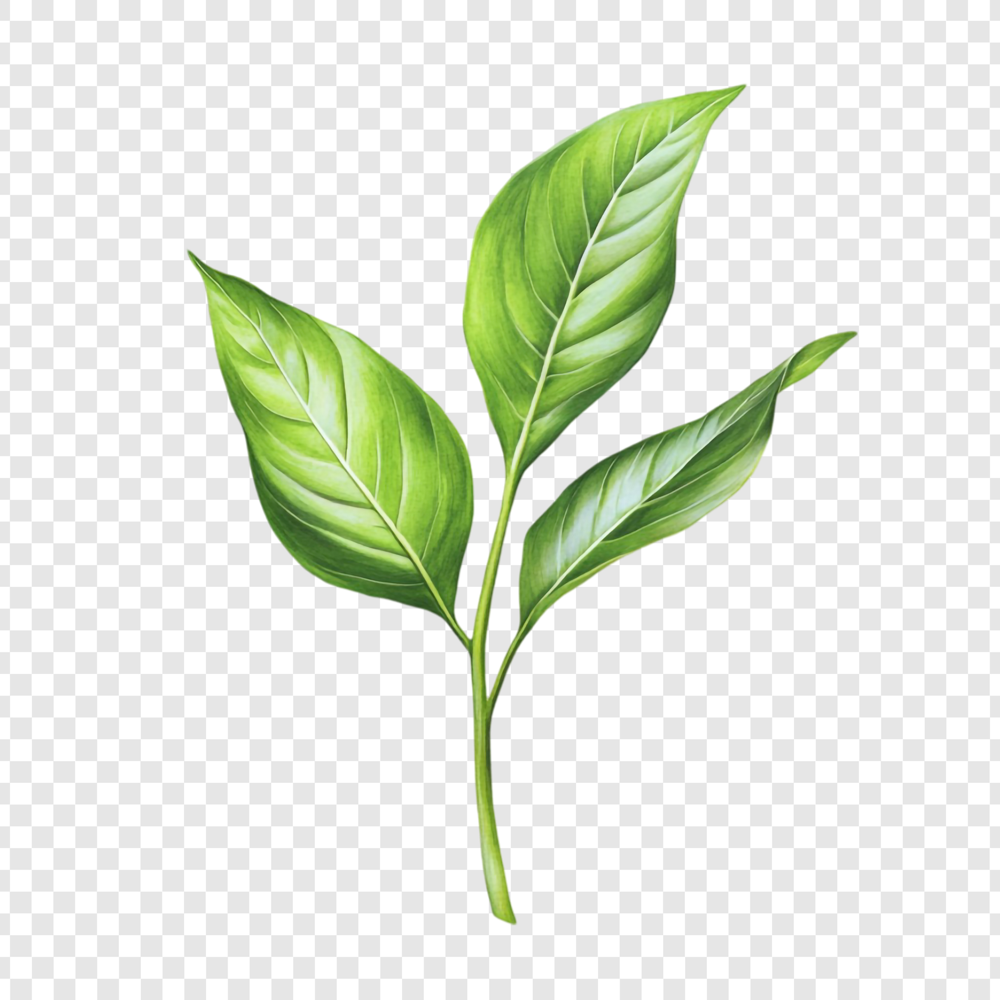

This diagram maps sensory traits of high-quality matcha to the cultivation
and chemical mechanisms that produce them.

Color
High chlorophyll concentration caused by shading before harvest.
Umami
Shading preserves L-theanine, producing sweetness and depth.
Bitterness
Catechin concentration increases with sunlight exposure.
Texture
Stone grinding creates ultra-fine particles (~10µm).
Aroma
Volatile compounds preserved through fresh milling.